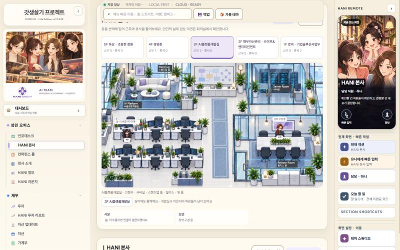
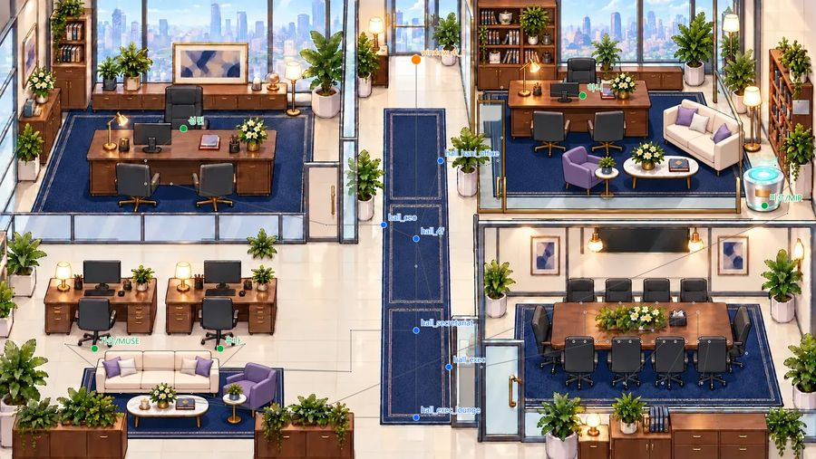
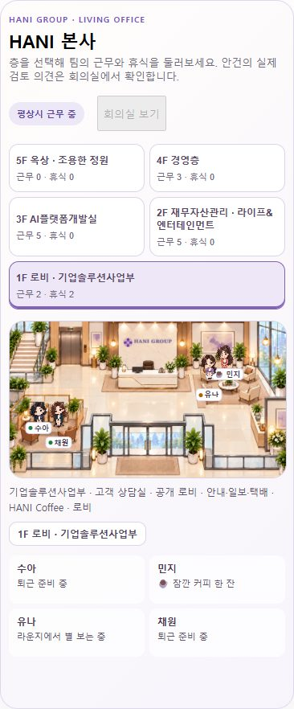
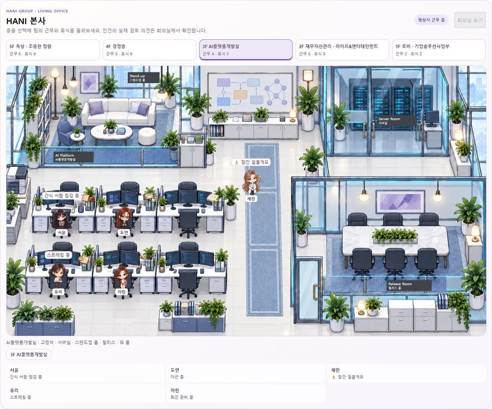
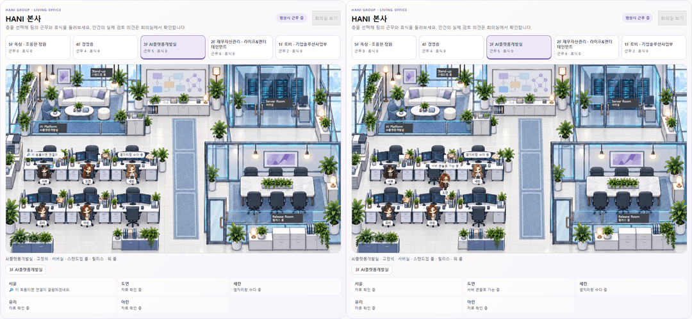

HANI 본사 · 운영 2.9.230 기준 · 설계 초안
말과 자리가 늘 맞는 본사 직원 동선
회장님이 보신 세 가지 어색함은 모두 한 뿌리에서 나왔어요. 지금은 직원이 무슨 말을 할지와 어디에 서 있을지를 따로따로 정하고 있거든요. 새 설계는 이 둘을 하나로 묶습니다.
주황 = 화면에 뜨는 문구청록 = 실제로 서 있는 곳
① 창밖 구경 중인데 사무실 한복판
운영 화면에서 재현함
01:57:24 · 도현 님이 3층 복도 한가운데에서 잠깐 자리 비움 · 창밖 구경 중

7초 뒤 · 릴리스 회의실 의자에서 창밖 구경 중
- 산책할 때 목적지는 "다른 방 아무 곳", 문구는 목록에서 따로 뽑기. 그래서 회의실에 가도 "창밖"이 붙어요.
- 자기 책상에 앉아 있을 때도 "창밖 멍때리는 중", "화이트보드에 낙서 중"이 나와요.
- 건물 지도에 창가 자리 자체가 없어요. 밤 행동 "창밖 야경 보기"도 자기 책상에서 해요.
- 하루를 1초 간격으로 돌려 보니 장소 문구와 실제 위치가 다른 경우가 268가지였어요.
② 커피 내리러 간다는데 복도 한가운데
지도 데이터에서 확인
각 층 복도에는 방마다 앞 지점이 있어야 하는데, 그림 위에서는 모두 같은 한 점(가운데)에 찍혀 있어요. 걷는 시간은 흐르는데 화면에선 그 자리에 몇 초씩 서 있게 돼요.
- 이런 "걸어도 제자리" 구간이 5개 층 모두 합쳐 26개예요.
- 걷기 시작하자마자 도착 후 문구(커피 내리러 왔어요)를 붙여요.
- 커피 장소는 1층 카페와 2층 팬트리뿐인데, 3·4층에서도 커피 문구가 나와요.
③ 자리로 돌아갈 때 남의 자리와 겹침
모델 좌표로 측정
- 산책과 방문객은 정식 예약 장부를 거치지 않고 따로 움직여요.
- 겹침 검사는 "완전히 같은 점"만 막아서, 바로 옆을 스치는 건 못 잡아요. 태오 님이 돌아오는 길이 앉아 있는 수아 님과 그림 기준 8px(휴대폰에선 2px 미만) 떨어진 곳을 지나가요.
- 걸리면 그 순간만 집으로 순간이동했다가 다음 순간 다시 나타날 수 있어요.
- 2.9.228–230에서 산책·방문객이 생기며 원래 숨어 있던 좌표 문제가 자주 보이게 됐어요. "예전엔 없던 문제"라는 말씀과 맞아요.
새 설계: 직원 한 명 = 상태 하나
승인 후 구현
직원은 아래 네 단계로만 움직이고, 화면 문구는 지금 단계에서만 나와요. 따로 뽑지 않아요.
1 · 자리
내 자리에 있음
자기 책상"보고서 다듬는 중"
2 · 가는 중
장소로 가는 중
예약한 길 위"팬트리로 커피 내리러 가는 중"
3 · 도착
장소에서 하는 중
예약한 자리 정확히"팬트리에서 커피 내리는 중"
4 · 복귀
자리로 돌아가는 중
반드시 내 책상으로"자리로 돌아가는 중"
| 규칙 | 효과 |
|---|
| 장소 카드: 층마다 실제 있는 장소(커피·창가·소파·회의실…)만 등록 | 3층엔 커피 카드가 없으니 3층에선 커피 행동이 안 나와요 |
| 책상 문구엔 장소 단어 금지 (창밖·화이트보드·소파·팬트리) | 앉아서 "창밖 멍때리는 중"이 사라져요 |
| 예약 장부 하나: 정식 행동·산책·방문객 모두 같은 장부에 자리·길 예약 | 같은 시각 같은 자리에 두 명이 서는 일이 원천적으로 없어요 |
| 내 책상은 나만: 비워도 남에게 안 빌려줌 | 복귀하면 언제나 자기 자리 |
| 복도 지점 분리 + 안전거리: 길은 남의 자리에서 일정 거리 이상 | 복도 제자리 멈춤, 스치듯 겹침이 사라져요 |
그대로 지키는 것: 캐릭터 그림과 층 화면, 서윤 팀장님 책상 마스코트가 읽는 정보, 생활 기록 저장소(hani_os_life_v23)와 Cloud는 건드리지 않아요.
구현 결과 (10/23)
테스트 통과 · 탑승 대기
회장님 결정(추천안: 창가 자리 새로 + 아린 리뷰, 방문객 포함)대로 도연 선임님이 구현하고 제가 검토·수정했어요.
| 확인한 것 | 전 | 후 |
|---|
| 걸어도 화면에서 제자리인 구간 | 26 | 0 |
| 장소 문구와 실제 위치가 다른 경우 (하루 매초) | 268 | 0 |
| 같은 층에서 30px 안으로 붙은 두 사람 | 12 | 0 |
| 본사 테스트 전체 | | 100 통과 · 0 실패 |
| Edge 화면 테스트 (390·884·1440 폭 × 1–5층) | | 1,110 장면 통과 |

새 창가 자리 예시 · 4층은 회장실이 아니라 공용 복도 끝 유리창 앞. 다섯 층 모두 아린 님 리뷰 통과

휴대폰 폭(390) 1층 · 겹침 없이 각자 자리

넓은 화면(1440) 3층 · 세린 님은 복도에서 잠깐 걸을게요, 나머지는 자기 책상
- 방문객은 예전 문구 그대로예요: "상담 받는 중", "택배 두고 갈게요", "배달 왔습니다!", 나갈 땐 "안녕히 계세요~".
- 버전은 올리지 않았어요. 배포 열차에 탑승해서 2.9.232 이후 한 번에 나가요. 생활 기록·Cloud는 그대로예요.
살아 있는 사무실 (2차 요청 반영)
아린 리뷰 PASS
"휴식 갔다가 몇 초 만에 복귀"와 "캐릭터 특성" 말씀을 반영했어요. 아래는 같은 3층을 같은 오후 2시부터 실제 시계로 6분 녹화해 15배속으로 줄인 영상이에요. 왼쪽이 지금 운영(2.9.230), 오른쪽이 바꾼 뒤예요.

전(왼쪽) · 후(오른쪽) · 6분 → 약 24초
| 바뀐 것 | 전 | 후 |
|---|
| 장소에 머무는 시간 (예: 팬트리 컵 헹구기) | 12–20초 | 1분 |
| 옥상 화분 물주기 · 라운지 창밖 보기 | 12–20초 | 1분 30초 · 2분 |
| 혼자 외출 체류 (커피 · 소파 · 창가) | 8–14초 | 1–3분 · 2–5분 · 40초–2분 |
| 한 사람이 외출하는 간격 | | 평균 26–46분 |
| 친한 사이 같이 외출 (09:00–19:30) | 0 | 하루 약 10번 |
| 사람마다 하루 다른 장소 · 다른 말 | | 5곳 이상 · 35가지 이상 |
| 예전 캐릭터 행동 중 사라진 것 (사흘 합산) | | 0 |
- 성격에 맞는 장소와 말: 도연 님은 서버실에서 "재현한 버그 재확인", 하루 님은 팬트리에서 "간식 가격 비교", 민지 님은 로비에서 "하니일보 1면 다시 읽기", 수연 님은 창가에서 "여행 코스 구상".
- 점심엔 카페·테라스, 오후 졸릴 땐 창가·커피, 저녁엔 라운지가 많아져요. 같은 장소를 연달아 가지 않고, 다녀오면 최소 10분은 자리에서 일해요.
- 셋이 같이 움직이는 장면은 아직이에요. 지금은 두 명까지 함께 다녀요.